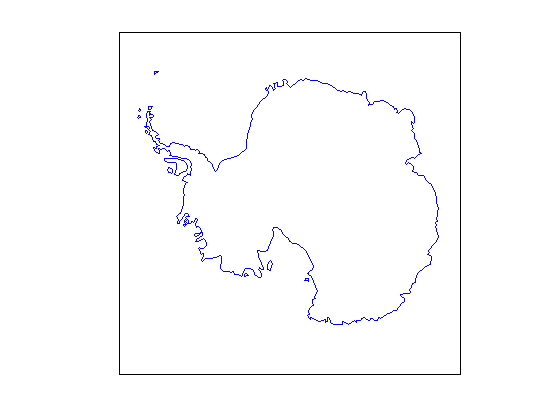
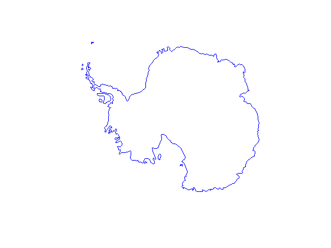
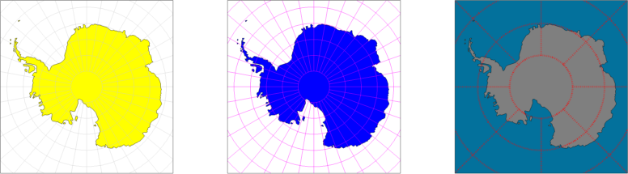

antmap documentation
antmap is part of Antarctic Mapping Tools for Matlab (Greene et al., 2017). Click here for a complete list of functions in AMT.
Use of antmap, mapzoom or anything that requires a license for Matlab's Mapping Toolbox is not recommended. Since I started developing AMT, I've come to realize Matlab's Mapping Toolbox is often rather inefficient, inflexible, and dependence on it can make it difficult to share code with colleagues who might not have a license. Instead of antmap, try using mapzoomps and the suite of functions ending in ps.
This function initializes a polar stereographic map of the southern hemisphere. This function is an adaptation of Andrew Roberts' ncpolarm function. This function requires Matlab's Mapping Toolbox.
Contents
Syntax
antmap
antmap('northernlimit',latitude)
antmap('grid')
antmap('lats',Latitudes)
antmap('lons',Longitudes)
antmap(...,'LineProperty',LineValue)
antmap(...,'Frame','off')
antmap(...,'OceanColor',Color)
h = antmap(...)Description
antmap initializes a polar stereographic projection map of Antarctica. If a figure is current, the new map is placed in the current figure. If no figure is current, a new figure is opened and a map is initialized.
antmap('northernlimit',latitude) sets the northern limit as a scalar latitude value between -90 and 0, northernmost limit of the map. Default is -63. If a positive value is declared, it is automatically switched to a negative value to indicate southern hemisphere.
antmap('grid') places a grid or graticule on the map.
antmap('lats',Latitudes) places grid lines a specified latitudes.
antmap('lons',Longitudes) places grid lines a specified longitudes.
antmap(...,'LineProperty',LineValue) sets line properties of a grid.
antmap(...,'Frame','off') removes frame from map perimeter. Default value is 'Frame', 'off'. Note that turning the frame off also removes ocean color.
antmap(...,'OceanColor',Color) specifies background color by Matlab's color names (e.g., 'red', 'blue',etc), abbreviations (e.g., 'r', 'b'), or RGB triple.
h = antmap(...) returns a handle h of new axes.
Example 1
Plot an ugly and inaccurate rendition of Antarctica's coast line:
load coast
antmap
plotm(lat,long)
 The frame from the image above may be removed by declaring 'frame','off':
antmap('frame','off')
Example 2
Plot a graticule under and over that ugly continent, and specify locations and LineSpec for another grid:
figure('position',[100 100 1000 400]) subplot(1,3,1) antmap('grid') % initializes left map and plots grid patchm(lat,long,'y') % plots yellow continent atop grid subplot(1,3,2) antmap % initializes center map patchm(lat,long,'b') % plots blue continent antmap('grid','color','m') % overlays magenta grid atop continent subplot(1,3,3) antmap('lats',-80:10:-50,...% Initializes & plots lines at 50, 60, 70, & 80 S 'lons',0:45:180,... % and 0, 45, 95, etc longitude 'color','red',... % in red 'linewidth',2,... % kinda thick 'linestyle',':',... % and dotted 'oceancolor',rgb('ocean blue')) % and sets ocean color. patchm(lat,long,[.5 .5 .5]) % plot gray continent
In the third subplot above, the rgb function was used to declare the ocean color as 'ocean blue'.
Citing AMT
If this function or any other part of Antarctic Mapping Tools is useful for you, please cite the paper that describes AMT.
Greene, C. A., Gwyther, D. E., & Blankenship, D. D. Antarctic Mapping Tools for Matlab. Computers & Geosciences. 104 (2017) pp. 104 (2017) pp.151-157. doi:10.1016/j.cageo.2016.08.003.
Author Info, function lineage
This function has been adapted by Chad Greene of the University of Texas at Austin's Institute for Geophysics (UTIG). The antmap function is an updated version of an old function called antmapinit, which was in an old version of the Bedmap2 Toolbox for Matlab. antmapinit was an adapted version of Andrew Roberts' ncpolarm function. Thanks to Dr. Roberts for sharing his function and making this work possible.